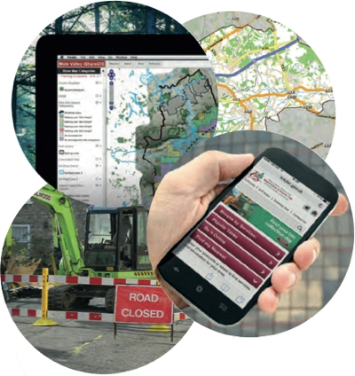
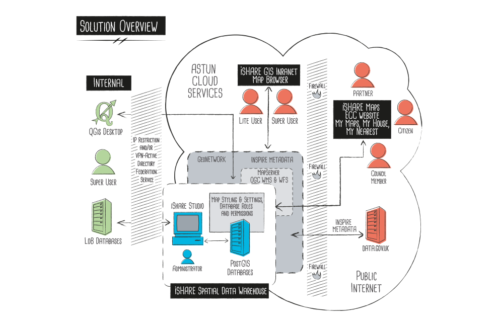
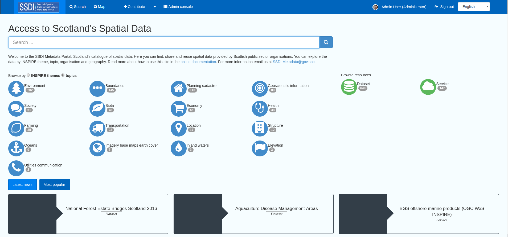
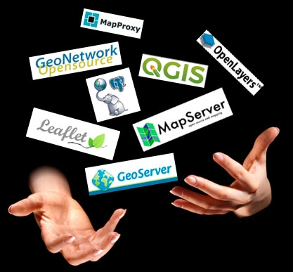
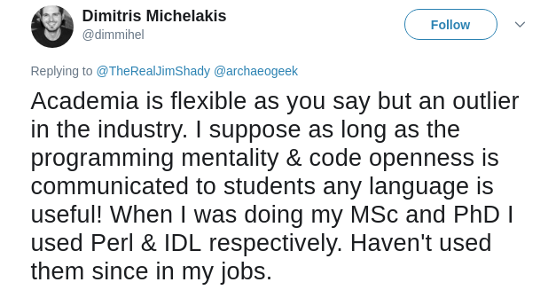
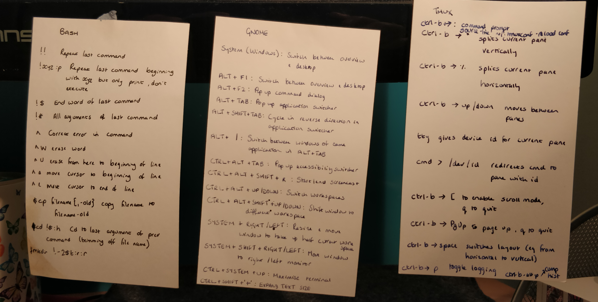

Try Open Source
It's good for you!
UCL, 2018
Follow along at archaeogeek.github.io/ucl_2018
The Ubiquitous Talk Outline Slide
- Some Context
- Different ways of working with Open Source, and why you should
- Top Tips
Who is this person?
Not your average "industry" career path
I studied Mathematics at the University of Durham, then Underwater Archaeology at the University of St Andrews, worked as a land archaeologist with Oxford Archaeology for 10 years, and then began work as a GIS consultant6 7 years ago.
Maths → Underwater Archaeology → Land Archaeology → GIS Consultant = No qualifications in GIS!
... just nearly 20 years experience in GIS, and 12(ish) using open source
I work as a consultant and metadata lead at Astun Technology.
Astun are a small firm, with 20 21 staff. We're based in Epsom but have staff spread across the UK and abroad.
We provide web-based GIS products to Local Authorities, Government Departments, Commercial Firms.

... More about Astun Technology shortly
So what do I mean when I talk about working with "Open Source"?
1: Companies built on Open Source software?
Yes, but also...
2: Using Open Source technologies and ideas in your day to day work
Building a company around Open Source GIS software
Astun Technology's primary product suite is a web-based GIS solution for local authorities, based on open source software. 
See My Chichester as an example.

Metadata Management
We also provide metadata solutions to allow local authorities meet their INSPIRE requirements, and complete metadata portals for larger clients.
We also do bespoke work, training, hackathons, and conferences
What packages do we use?
Our product suite is built around PostgreSQL and PostGIS, OpenLayers, Mapserver, and OGR. We also work with Geonetwork, QGIS, Leaflet, Geoserver, Java, and use lots of Python
We contribute back by committing bug fixes, enhancements, and documentation to all the projects we use.
We also sponsor the development of new features, help organising conferences, and so on
But how do we make money?
Our products are all based on open source, which is free, so where's the catch?
Flickr:cogdogblog CC-BY-2.0Fact: Open source is not about money
Open source is purely about not restricting access to the source code, preserving the author's integrity, and not discriminating against people, or specific use-cases. There's no limitation on charging for development of solutions based on that code
Fact: Open source is not even free
As long as you provide the source code of the core software under it's original license, you can, and should, charge for adding value, such as development, installation, consultancy, training, maintenance...
Confession
We don't do everything with open source
We use Google for email, Amazon for our virtual servers, and even pay for software sometimes!
We prefer open, but if a paid-for solution is the best and doesn't restrict us then that's fine!
Using Open Source in your day to day work
The open source mindset is lightweight and innovative by necessity
Teach yourself to work in the same way
Learn to be flexible and open to new opportunities or technologies
Avoid "lock-in"
This applies to both software and skills
Aim for continuous improvement
Constantly look for opportunities to learn something new and/or get better
This will stop you getting bored for a start!
Ask difficult questions
Because something has been done the same way for decades doesn't mean it's the best way now
Similarly, don't rely solely on what you learnt at Uni!
Wikimedia Commons CC-BY-SA-2.5